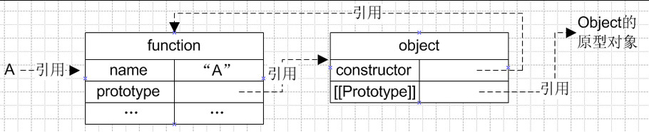
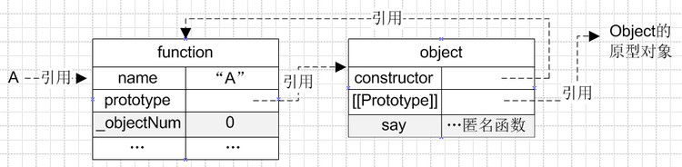
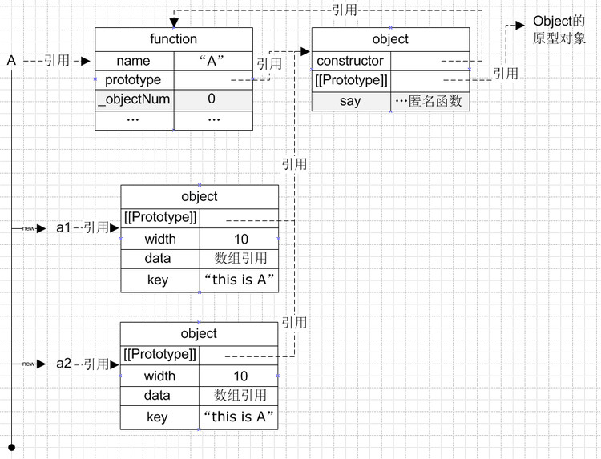
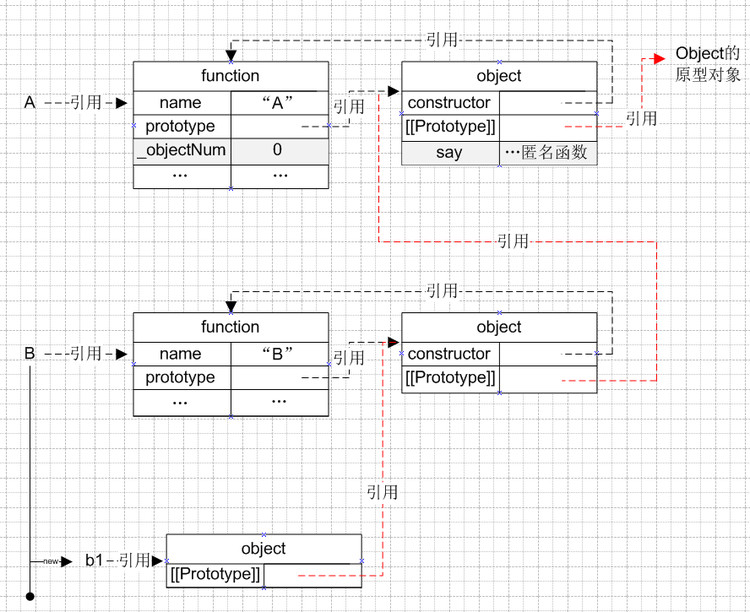

我们知道Javascript中的变量定义基本如下：
var name = 'Chen Hao'; var email = 'haoel(@)hotmail.com'; var website = 'http://coolshell.cn';
如果要用对象来写的话，就是下面这个样子：
var chenhao = {
name :'Chen Hao',
email : 'haoel(@)hotmail.com',
website : 'http://coolshell.cn'
};
于是，我就可以这样访问：
//以成员的方式 chenhao.name; chenhao.email; chenhao.website; //以hash map的方式 chenhao["name"]; chenhao["email"]; chenhao["website"];
关于函数，我们知道Javascript的函数是这样的：
var doSomething = function(){
alert('Hello World.');
};
于是，我们可以这么干：
var sayHello = function(){
var hello = "Hello, I'm "+ this.name
+ ", my email is: " + this.email
+ ", my website is: " + this.website;
alert(hello);
};
chenhao.Hello = sayHello; //直接赋值，这里很像C/C++的函数指针
chenhao.Hello();
};
相信这些东西都比较简单，大家都明白了。 可以看到javascript对象函数是直接声明，
直接赋值，直接就用了。runtime的动态语言。
还有一种比如规范的写法是：
{{{class="brush: javascript"
//我们可以看到， 其用function来做class。
var Person = function(name, email, website){
this.name = name;
this.email = email;
this.website = website;
this.sayHello = function(){
var hello = "Hello, I'm "+ this.name + ", n" +
"my email is: " + this.email + ", n" +
"my website is: " + this.website;
alert(hello);
};
};
var chenhao = new Person("Chen Hao", "haoel@hotmail.com",
"http://coolshell.cn");
chenhao.sayHello();
顺便说一下，要删除对象的属性，很简单：
delete chenhao['email']
上面的这些例子，我们可以看到这样几点：
this指针很关键，如果没有的话，那就是局部变量或局部
函数。
先看下面的代码：
//创建对象
var chenhao = Object.create(null);
//设置一个属性
Object.defineProperty( chenhao, 'name', {
value: 'Chen Hao',
writable: true,
configurable: true,
enumerable: true
});
//设置多个属性
Object.defineProperties( chenhao, {
'email': {
value: 'haoel@hotmail.com',
writable: true,
configurable: true,
enumerable: true
},
'website': { value: 'http://coolshell.cn',
writable: true,
configurable: true,
enumerable: true
}
});
下面就说说这些属性配置是什么意思：
Object.keys中列举出来。
get()/set(_value)：get和set访问器。
关于get/set访问器，它的意思就是用get/set来取代value（其不能和value一起使用）， 示例如下：
var age = 0;
Object.defineProperty( chenhao, 'age', {
get: function() {return age+1;},
set: function(value) {age = value;}
enumerable : true,
configurable : true
}
);
chenhao.age = 100; //调用set
alert(chenhao.age); //调用get 输出101;
我们再看一个更为实用的例子——利用已有的属性age通过get和set构造新的属性
birth_year：
Object.defineProperty( chenhao, 'birth_year', {
get: function() {
var d = new Date();
var y = d.getFullYear();
return ( y - this.age );
},
set: function(year) {
var d = new Date();
var y = d.getFullYear();
this.age = y - year;
}
});
alert(chenhao.birth_year);
chenhao.birth_year = 2000;
alert(chenhao.age);
这样做好像有点麻烦，你说，我为什么不写成下面这个样子：
var chenhao = {
name: "Chen Hao",
email: "haoel@hotmail.com",
website: "http://coolshell.cn",
age: 100,
get birth_year() {
var d = new Date();
var y = d.getFullYear();
return ( y - this.age );
},
set birth_year(year) {
var d = new Date();
var y = d.getFullYear();
this.age = y - year;
}
};
alert(chenhao.birth_year);
chenhao.birth_year = 2000;
alert(chenhao.age);
是的，你的确可以这样的，不过通过defineProperty()你可以干这些事：
如果查看并管理对象的这些配置，下面有个程序可以输入这些东西：
//列出对象的属性.
function listProperties(obj)
{
var newLine = "";
var names = Object.getOwnPropertyNames(obj);
for (var i = 0; i < names.length; i++) {
var prop = names[i];
document.write(prop + newLine);
// 列出对象的属性配置（descriptor）动用getOwnPropertyDescriptor函数。
var descriptor = Object.getOwnPropertyDescriptor(obj, prop);
for (var attr in descriptor) {
document.write("..." + attr + ': ' + descriptor[attr]);
document.write(newLine);
}
document.write(newLine);
}
}
listProperties(chenhao);
关于Javascript的this指针，和C++/Java很类似。 我们来看个示例：（这个示例很简单了 ，我就不多说了）
function print(text){
document.write(this.value + ' - ' + text+ '');
}
var a = {value: 10, print : print};
var b = {value: 20, print : print};
print('hello');// this => global, output "undefined - hello"
a.print('a');// this => a, output "10 - a"
b.print('b'); // this => b, output "20 - b"
a['print']('a'); // this => a, output "10 - a"
我们再来看看call和apply，这两个函数的差别就是参数的样子不一样，另一个就是性能 不一样，apply的性能要差很多。（关于性能，可到JSPerf上去跑跑看看）
print.call(a, 'a'); // this => a, output "10 - a" print.call(b, 'b'); // this => b, output "20 - b" print.apply(a, ['a']); // this => a, output "10 - a" print.apply(b, ['b']); // this => b, output "20 - b"
但是在bind后，this指针，可能会有不一样，但是因为Javascript是动态的。如下面的示例
var p = print.bind(a);
p('a'); // this => a, output "10 - a"
p.call(b, 'b'); // this => a, output "10 - b"
p.apply(b, ['b']); // this => a, output "10 - b"
通过上面的那些示例，我们可以通过Object.create()来实际继承，请看下面的代码，
Student继承于Object：
var Person = Object.create(null);
Object.defineProperties
(
Person,
{
'name' : { value: 'Chen Hao'},
'email' : { value : 'haoel@hotmail.com'},
'website': { value: 'http://coolshell.cn'}
}
);
Person.sayHello = function (person) {
var hello = "<p>Hello, I am "+ this.name + ", " +
"my email is: " + this.email + ", " +
"my website is: " + this.website;
document.write(hello + "");
}
var Student = Object.create(Person);
Student.no = "1234567"; //学号
Student.dept = "Computer Science"; //系
//检查Person的属性
document.write(Student.name + ' ' + Student.email + ' ' + Student.website +'');
//检查Person的方法
Student.sayHello();
//重载SayHello方法
Student.sayHello = function (person) {
var hello = "<p>Hello, I am "+ this.name + ", " +
"my email is: " + this.email + ", " +
"my website is: " + this.website + ", " +
"my student no is: " + this. no + ", " +
"my departent is: " + this. dept;
document.write(hello + '');
}
//再次调用
Student.sayHello();
//查看Student的属性（只有 no 、 dept 和 重载了的sayHello）
document.write('<p>' + Object.keys(Student) + '');
通用上面这个示例，我们可以看到，Person里的属性并没有被真正复制到了Student中来， 但是我们可以去存取。这是因为Javascript用委托实现了这一机制。其实，这就是 Prototype，Person是Student的Prototype。
当我们的代码需要一个属性的时候，Javascript的引擎会先看当前的这个对象中是否有这个 属性，如果没有的话，就会查找他的Prototype对象是否有这个属性，一直继续下去，直到 找到或是直到没有Prototype对象。
为了证明这个事，我们可以使用Object.getPrototypeOf()来检验一下：
Student.name = 'aaa';
document.write('<p>' + Student.name + '</p>'); //输出 aaa
document.write('<p>' +Object.getPrototypeOf(Student).name + '</p>');
//输出 Chen Hao
于是，你还可以在子对象的函数里调用父对象的函数，就好像C++里的Base::func()一样
。于是，我们重载hello()的方法就可以使用父类的代码了：
//新版的重载SayHello方法
Student.sayHello = function (person) {
Object.getPrototypeOf(this).sayHello.call(this);
var hello = "my student no is: " + this. no + ", " +
"my departent is: " + this. dept;
document.write(hello + '');
}
这个很强大吧。
上面的那个东西还不能满足我们的要求，我们可能希望这些对象能真正的组合起来。为什么 要组合？因为我们都知道是这是OO设计的最重要的东西。不过，这对于Javascript来并没有 支持得特别好，不好我们依然可以搞定个事。
首先，我们需要定义一个Composition的函数：（target是作用于是对象，source是源对象 ），下面这个代码还是很简单的，就是把source里的属性一个一个拿出来然后定义到target 中。
function Composition(target, source)
{
var desc = Object.getOwnPropertyDescriptor;
var prop = Object.getOwnPropertyNames;
var def_prop = Object.defineProperty;
prop(source).forEach(
function(key) {
def_prop(target, key, desc(source, key))
}
)
return target;
}
有了这个函数以后，我们就可以这来玩了：
//艺术家
var Artist = Object.create(null);
Artist.sing = function() {
return this.name + ' starts singing...';
}
Artist.paint = function() {
return this.name + ' starts painting...';
}
//运动员
var Sporter = Object.create(null);
Sporter.run = function() {
return this.name + ' starts running...';
}
Sporter.swim = function() {
return this.name + ' starts swimming...';
}
Composition(Person, Artist);
document.write(Person.sing() + '');
document.write(Person.paint() + '');
Composition(Person, Sporter);
document.write(Person.run() + '');
document.write(Person.swim() + '');
看看 Person中有什么？
document.write('<p>' + Object.keys(Person) + '');
// 输出：sayHello,sing,paint,swim,run
我们先来说说Prototype。我们先看下面的例程，这个例程不需要解释吧，很像C语言里的 函数指针，在C语言里这样的东西见得多了。
var plus = function(x,y){
document.write( x + ' + ' + y + ' = ' + (x+y) + '');
return x + y;
};
var minus = function(x,y){
document.write(x + ' - ' + y + ' = ' + (x-y) + '');
return x - y;
};
var operations = {
'+': plus,
'-': minus
};
var calculate = function(x, y, operation){
return operations[operation](x, y);
};
calculate(12, 4, '+');
calculate(24, 3, '-');
那么，我们能不能把这些东西封装起来呢，我们需要使用prototype。看下面的示例：
var Cal = function(x, y){
this.x = x;
this.y = y;
}
Cal.prototype.operations = {
'+': function(x, y) { return x+y;},
'-': function(x, y) { return x-y;}
};
Cal.prototype.calculate = function(operation){
return this.operations[operation](this.x, this.y);
};
var c = new Cal(4, 5);
Cal.calculate('+');
Cal.calculate('-');
这就是prototype的用法，prototype 是javascript这个语言中最重要的内容。网上有太多 的文章介始这个东西了。说白了，prototype就是对一对象进行扩展，其特点在于通过 “复制”一个已经存在的实例来返回新的实例，而不是新建实例。
被复制的实例就是我们所称的“原型”，这个原型是可定制的（当然，这里没有真正的复制， 实际只是委托）。上面的这个例子中，我们扩展了实例Cal，让其有了一个operations的 属性和一个calculate的方法。
这样，我们可以通过这一特性来实现继承。还记得我们最最前面的那个Person吧，下面的 示例是创建一个Student来继承Person。
function Person(name, email, website){
this.name = name;
this.email = email;
this.website = website;
};
Person.prototype.sayHello = function(){
var hello = "Hello, I am "+ this.name + ", " +
"my email is: " + this.email + ", " +
"my website is: " + this.website;
return hello;
};
function Student(name, email, website, no, dept){
var proto = Object.getPrototypeOf;
proto(Student.prototype).constructor.call(this, name, email, website);
this.no = no;
this.dept = dept;
}
// 继承prototype
Student.prototype = Object.create(Person.prototype);
//重置构造函数
Student.prototype.constructor = Student;
//重载sayHello()
Student.prototype.sayHello = function(){
var proto = Object.getPrototypeOf;
var hello = proto(Student.prototype).sayHello.call(this) + '';
hello += "my student no is: " + this. no + ", " +
"my departent is: " + this. dept;
return hello;
};
var me = new Student(
"Chen Hao",
"haoel@hotmail.com",
"http://coolshell.cn",
"12345678",
"Computer Science"
);
document.write(me.sayHello());
上面的这些代码并不一定能在所有的浏览器下都能运行，因为上面这些代码遵循 ECMAScript 5的规范，关于ECMAScript 5 的浏览器兼容列表，你可以看这里： ES5浏览器兼容表
本文中的所有代码都在Chrome最新版中测试过了。
下面是一些函数，可以用在不兼容ES5的浏览器中：
function clone(proto) {
function Dummy() { }
Dummy.prototype = proto;
Dummy.prototype.constructor = Dummy;
return new Dummy(); //等价于Object.create(Person);
}
var me = clone(Person);
function defineProperty(target, key, descriptor) {
if (descriptor.value){
target[key] = descriptor.value;
}else {
descriptor.get && target.__defineGetter__(key, descriptor.get);
descriptor.set && target.__defineSetter__(key, descriptor.set);
}
return target
}
function keys(object) { var result, key
result = [];
for (key in object){
if (object.hasOwnProperty(key)) result.push(key)
}
return result;
}
function proto(object) {
return !object? null
: '__proto__' in object? object.__proto__
: /* not exposed? */ object.constructor.prototype
}
var slice = [].slice
function bind(fn, bound_this) { var bound_args
bound_args = slice.call(arguments, 2)
return function() { var args
args = bound_args.concat(slice.call(arguments))
return fn.apply(bound_this, args) }
}
在了解原型链之前我们先来看看一个函数在创建过程中做了哪些事情，举一个空函数的例子 ：
function A() {};
当我们在代码里面声明这么一个空函数，js解析的本质是（肤浅理解有待深入）：
[[Prototype]]属性），根据ECMA，其中
[[Prototype]]属性不可见、不可枚举
name、prototype属性），再通过prototype属性引用刚才创建的
对象
A，同时把函数的引用赋值给变量A。
如下图所示：

JavaScript原型和继承（注意图中都是“ 引用 ”类型）
每个函数的创建都经历上述过程。
那么什么是构造函数呢？
按照ECMA的定义：Constructor is a function that creates and initializes the newly created object.
构造函数是用来新建同时初始化一个新对象的函数。
什么样的函数可以用来创建同时初始化新对象呢？答案是：任何一个函数，包括空函数。
所以，结论是：任何一个函数都可以是构造函数。
根据前面空函数的创建图示，我们知道每个函数在创建的时候都自动添加了prototype
属性，这就是函数的原型，从图中可知其实质就是对一个对象的引用（这个对象暂且取名
原型对象）。
我们可以对函数的原型对象进行操作，和普通的对象无异！一起来证实一下。
围绕刚才创建的空函数，这次给空函数增加一些代码：
function A() {
this.width = 10;
this.data = [1,2,3];
this.key = "this is A";
}
A._objectNum = 0;//定义A的属性
A.prototype.say = function() { //给A的原型对象添加属性
alert("hello world")
}
其中给函数的原型对象增加一个say属性并引用一个匿名函数，根据“函数创建
”过程，图解如下：

（灰色背景就是在空函数基础上增加的属性）
简单说原型就是函数的一个属性，在函数的创建过程中由js编译器自动添加。
那么原型有什么用呢？
先了解下new运算符，如下：
var a1 = new A; var a2 = new A;
这是通过构造函数来创建对象的方式，那么创建对象为什么要这样创建而不是直接
用var a1 = {};呢？这就涉及new的具体步骤了，这里的new操作可以分成三步(以a1的
创建为例)：
a1：var a1 = {};
[[Prototype]]属性指向函数A的原型对象：
a1.[[Prototype]] = A.prototype
A，同时把this指向第一步中创建的对象a1，对对象进行初始化：
A.apply(a1,arguments)
其结构图示如下：

从图中看到，无论是对象a1还是a2，都有一个属性保存了对函数A的原型对象的引用
，对于这些对象来说，一些公用的方法可以在函数的原型中找到，节省了内存空间。
了解了new运算符以及原型的作用之后，一起来看看什么是[[Prototype]]？以及对象如何
沿着这个引用来进行属性的查找？
在js的世界里，每个对象默认都有一个[[Prototype]]属性，其保存着的地址就构成了
对象的原型链，它是由js编译器在对象 被创建 的时候自动添加的，其取值由new运算符的
右侧参数决定：
当我们var object1 = {};的时候，object1的[[Prototype]]就指向Object构造
函数的原型对象，因为var object1 = {};实质上等于var object = new Object();
（原因可参照上述对new A的分析过程）。
对象在查找某个属性的时候，会首先遍历自身的属性，如果没有则会继续查找
[[Prototype]]引用的对象，如果再没有则继续查找[[Prototype]].[[Prototype]]引用
的对象，依次类推，直到[[Prototype]].….[[Prototype]]为undefined（Object的
[[Prototype]]就是undefined）
//我们想要获取a1.fGetName alert(a1.fGetName);//输出undefined //1、遍历a1对象本身 //结果a1对象本身没有fGetName属性 //2、找到a1的[[Prototype]]，也就是其对应的对象A.prototype，同时进行遍历 //结果A.prototype也没有这个属性 //3、找到A.prototype对象的[[Prototype]]，指向其对应的对象Object.prototype //结果Object.prototype也没有fGetName //4、试图寻找Object.prototype的[[Prototype]]属性，结果返回undefined，这就是a1.fGetName的值
简单说就是通过对象的[[Prototype]]保存对另一个对象的引用，通过这个引用往上进行
属性的查找，这就是原型链。
有了原型链的概念，就可以进行继承。
function B() {};
这个时候产生了B的原型B.prototype
原型本身就是一个Object对象，我们可以看看里面放着哪些数据
B.prototype实际上就是：
{
constructor : B,
[[Prototype]] : Object.prototype
}
因为prototype本身是一个Object对象的实例，所以其原型链指向的是Object的原型
B.prototype = A.prototype;
上面相当于把B的prototype指向了A的prototype；这样只是继承了A的prototype方法，A中 的自定义方法则不继承
B.prototype.thisisb = "this is constructor B";
上面的代码也会改变a的prototype
但是我们只想把B的原型链指向A，如何实现？
第一种是通过改变原型链引用地址
B.prototype.__proto__ = A.prototype;
ECMA中并没有__proto__这个方法，这个是ff、chrome等js解释器添加的，等同于EMCA的
[[Prototype]]，这不是标准方法，那么如何运用标准方法呢？
我们知道new操作的时候，实际上只是把实例对象的原型链指向了构造函数的prototype
地址块，那么我们可以这样操作
B.prototype = new A();
这样产生的结果是：
产生一个A的实例，同时赋值给B的原型，也即B.prototype相当于对象：
{
width :10,
data : [1,2,3],
key : "this is A",
[[Prototype]] : A.prototype
}
这样就把A的原型通过B.prototype.[[Prototype]]这个对象属性保存起来，构成了原型的
链接
但是注意，这样B产生的对象的构造函数发生了改变，因为在B中没有constructor属性，
只能从原型链找到A.prototype，读出constructor:A：
var b = new B; console.log(b.constructor); //output A
所以我们还要人为设回B本身：
B.prototype.constructor = B;
现在B的原型就变成了：
{
width :10,
data : [1,2,3],
key : "this is A",
[[Prototype]] : A.prototype,
constructor : B
}
console.log(b.constructor); //output B
同时B直接通过原型继承了A的自定义属性width和name：
console.log(b.data);//output [1,2,3]
这样的坏处就是，直接改变了prototype的data数组（引用）：
b.data.push(4); var c = new B; alert(c.data); //output [1,2,3,4]
其实我们想要的只是原型链，A的自定义属性我们想在B中进行定义（而不是在prototype） 。
该如何进行继承？既然我们不想要A中自定义的属性，那么可以想办法把其过滤。可以新建 一个空函数，把这个空函数的原型指向构造函数A的原型：
function F(){}
F.prototype = A.prototype;
这个时候再通过new操作把B.prototype的原型链指向F的原型：
B.prototype = new F;
这个时候B的原型变成了：
{ [[Prototype]] : F.prototype }
这里F.prototype其实只是一个地址的引用。但是由B创建的实例其constructor指向了
A，所以这里要显示设置一下B.prototype的constructor属性：
B.prototype.constructor = B;
这个时候B的原型变成了：
{
constructor : B ,
[[Prototype]] : F.prototype
}
这样就实现了B对A的原型继承。图示如下，其中红色部分代表原型链：
